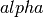
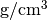

Band structure input parameters¶
- Notes about format
- General parameters
- General scattering related parameters
- Acoustic phonon scattering parameters
- Piezoelectric phonon scattering parameters
- Non-polar optical phonon scattering
- Polar optical phonon scattering
- Intervalley acoustic phonon scattering
- Ionized impurity scattering parameters
- Alloy scattering parameters
- Common scattering parameters
- Tight binding related parameters
Notes about format¶
The input files follow normal YAML conventions.
Please inspect the sample file input/bandparam.yml.
Even though many parameters have default values if not
specified the user should always run the calculations with
fully specified input files for consistency and reproducibility.
There is one entry per band. If many bands are used one can specify a range, e.g. Band X-Y: to set the same parameters for bands X to Y. Or if one would want to set the same parameters for all bands one should use Band 1-: This is quite usefull when reading data from a full-band calculation of some sort.
Remember to use two spaces indent after each Band entry (before a new Band entry) in order to comply with the YAML formatting standard.
Also, the parameters should be indented with two spaces from the Band entry:
Make sure all bands are specified. In this example, five bands was included.
General parameters¶
The following parameters are general and does not relate directly to a specific scattering mechanism etc.
type¶
Determines how to generate the bands if not read. Relevant only
if read is set to param. The following options are
possible:
0 spherical bands according to the relation
where the effective mass
 is set by
is set by effmass.1 spherical bands pluss a quartic correction according to the relation:
where the effective mass
is set by effmassand the correction factor is set by
is set by a.2 Kane types (alpha correction) according to the relation:
where the effective mass
is set by effmassand the correction factor  is set bya.3 tight-binding bands if which the relation depends on the specific model used, but is typically a combination of cosines and sines. The tight-binding model is generated in PythTB using the additional parameters
torb,tonsite,tadjust_onsite_zeroandthop. Users should consult the PythTB manual for additional details.
No band folding is performed, except for the tight-binding case. It is important thus to scale the unit cell such that there is enough band coverage within the requested region of the chemical potentials pluss the excess needed for the thermal broadening.
effmass¶
The effective mass in units of the free electron mass along each configured unit vector in reciprocal cell. Use negative values to generate bands that curve down and vice versa.
Example:
effmass: [-1.0,-1.0,-1.0]
Generates band that for the spherical case curves down with an effective mass along each unit vector of the configured recirprocal cell equal to the free electron mass.
a¶
The correction factor to be applied. See type for
additional description. Is given along each unit vector
in the configured reciprocal cell similar to the effective mass.
Example:
a: [-100.0,-100.0,-100.0]
Applies a correction factor of -100.0 along each unit vector direction in the currently configured reciprocal cell.
e0¶
An energy shift in units of eV. Applies to the current band.
Example:
e0: 0.0
Shift the band with 0.0 eV.
status¶
Determines if this is a valence or a conduction band. The following options are available:
- v valence band
- c conduction band
Example:
status: v
This band is a valence band.
kshift¶
Shift the band by a reciprocal vector, otherwise it is centered at Gamma. Have to be specified in cartesian coordinates.
Example:
kshift: [0.0,0.0,0.0]
Do not apply any shift to the current band.
spin_degen¶
The spin degeneracy of the current band. The following options are available:
- 1 not spin degenerated
- 2 spin degenerated
Example:
spin_degen: 2
The current band is spin degenerated.
Acoustic phonon scattering parameters¶
This model uses the linear Debye model.
d_a¶
Acoustic deformation potential in units of eV. Remember to rescale this is the overlap matrix is not one.
Example:
d_a: 10
Use a deformation potential of 10 eV.
speed_sound¶
The speed of sound. This is the group velocity of the low energy acoustic branch that is in the Debye model assumed to be linear. In units of m/s.
Example:
speed_sound: 10000
Use a group velocity of 10000 m/s.
Piezoelectric phonon scattering parameters¶
This model uses the polarization that is set up due to strain effects to describes acoustic phonon scattering. Typically important for polar materials.
Non-polar optical phonon scattering¶
This model uses the Einstein model of a optical phonon mode (dispersion assumed to be flat so a constant value is used for the frequency).
d_o¶
The optical deformation potential in units of eV/AA.
Example:
d_o: 35.0
The optical deformation potential is set to 35.0 eV/AA.
Polar optical phonon scattering¶
After the Froelich model. Should be replaced for a more explicit model in the future.
Intervalley acoustic phonon scattering¶
A model where the electron scatters both of acoustic and optical phonon modes. E.g. phonons connect two valleys.
n_vv¶
The intervalley phonon occupation number.
Example:
n_vv: 0.0
The intervalley phonon occupation number is set to zero.
omega_vv¶
The transition frequency in units of THz.
Example:
omega_vv: 0.0
The transition frequency is set to zero.
etrans¶
The transition energy between the bottom of the two values. In units of eV.
Example:
etrans: 0.0
The transition energy is set to zero.
zf¶
The number of possible final states (final state degeneracy).
Example:
zf: 0.0
The number of final states is set to zero.
q_energy_trans¶
The scattering vector connecting the two valleys in direct reciprocal coordinates.
Example:
q_energy_trans: [[0,0,0],[0.5,0.5,0.5]]
The scattering vector is set along the diagonal reciprocal cell.
Ionized impurity scattering parameters¶
Parameters using either the Conwell and Weisskopf (CW) or the Broks and Herring (BH) model to describe ionized impurity scattering.
n_i¶
The density of ionized impurities in units of
 . Used for both the
CW and BH model.
. Used for both the
CW and BH model.
Example:
n_i: 0.01
The density of ionized impurities is set to .
Alloy scattering parameters¶
A scattering model for the alloy .
 of the alloy.
of the alloy.Common scattering parameters¶
Here follows scattering parameters that are shared between the different scattering mechnisms.
eps¶
The dielectric constant in units of the vacuum value.
Example:
eps: 12.0
The dielectric constant is set to 12.0 times the vacuum value.
rho¶
The mass density of the material in .
Example:
rho: 2.4
The mass density of the material is set to 2.4 .
Tight binding related parameters¶
In the following the parameters which set up the tight binding
parameters are explained. They are only relevant if type is set
to 3. PythTB is used to set up the model. Please consult
PythTB manual
for additional details.
torb¶
The direct coordinate of each tight binding orbital.
Example:
torb: [[0.0,0.0,0.0]]
A tight binding orbital is  centered.
centered.
tonsite¶
The onsite energies for each orbital in units of eV.
Example:
tonsite: [0.0]
The onsite energy of the first orbital is set at 0.0 eV.
thop¶
A list of each hopping term, where each term has the format
- as described in the
- PythTB manual
Example:
thop: [[-0.5, 0, 0, [1, 0, 0]],
[-0.5, 0, 0, [0, 1, 0]],
[-0.5, 0, 0, [0, 0, 1]]]